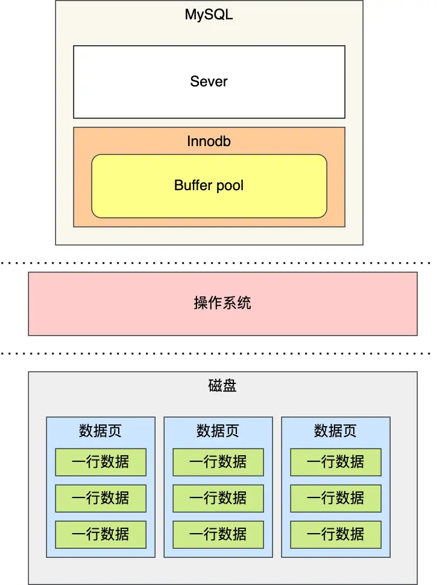
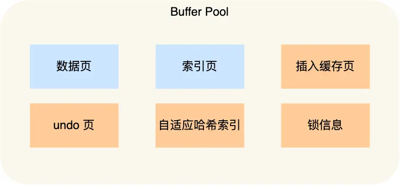
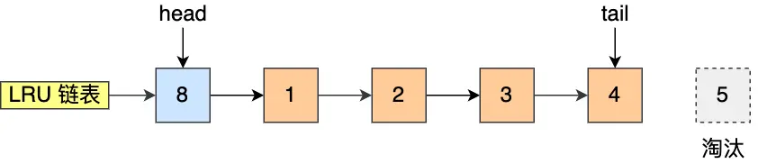
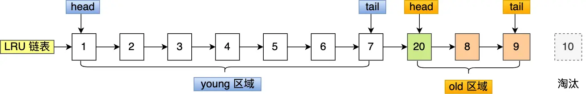
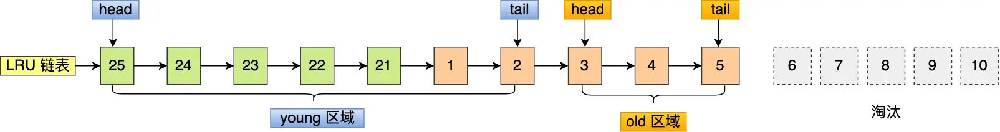

数据库（七）缓存机制
为什么要有缓存机制
MySQL 的数据是存储在磁盘里的，但每次访问磁盘开销过大。为此，Innodb 存储引擎设计了一个缓冲池（Buffer Pool），当数据从磁盘中取出后，缓存到Buffer Pool中，下次查询同样的数据的时候，直接从内存中读取，来提高数据库的读写性能。

除了数据的读取保存在缓存中，对数据的修改也不是立即写入磁盘，而是先写到缓存后择机刷盘。所以 Buffer Pool 中包含脏数据（数据页中）和 undo 页

如何提高缓存命中率
基本实现
使用LRU（Least recently used）算法
该算法的思路是，链表头部的节点是最近使用的，而链表末尾的节点是最久没被使用的。那么，当空间不够了，就淘汰最久没被使用的节点，从而腾出空间。
简单的 LRU 算法的实现思路是这样的：
- 当访问的页在 Buffer Pool 里，就直接把该页对应的 LRU 链表节点移动到链表的头部
- 当访问的页不在 Buffer Pool 里，除了要把页放入到 LRU 链表的头部，还要淘汰 LRU 链表末尾的节点
存在的问题
预读失效
MySQL 在加载数据页时，会提前把它相邻的数据页一并加载进来，目的是为了减少磁盘 IO（局部性原理）
但是可能这些被提前加载进来的数据页，并没有被访问，相当于这个预读是白做了，这个就是预读失效。
而且还会造成原本在LRU中的热点数据被预读后的不访问数据挤出链表，导致下次访问需要访问磁盘

解决方法
要避免预读失效带来影响，最好就是让预读的页停留在 Buffer Pool 里的时间要尽可能的短，让真正被访问的页才移动到 LRU 链表的头部，从而保证真正被读取的热数据留在 Buffer Pool 里的时间尽可能长
MySQL 改进了 LRU 算法，将 LRU 划分了 2 个区域：old 区域 和 young 区域。
划分这两个区域后，预读的页就只需要加入到 old 区域的头部，当页被真正访问的时候，才将页插入 young 区域的头部。如果预读的页一直没有被访问，就会从 old 区域被young区淘汰的页面挤出，这样就不会影响 young 区域中的热点数据

Buffer Pool 污染
当某一个 SQL 语句扫描了大量的数据时，在 Buffer Pool 空间比较有限的情况下，可能会将 Buffer Pool 里的所有页都替换出去，导致大量热数据被淘汰了，等这些热数据又被再次访问的时候，由于缓存未命中，就会产生大量的磁盘 IO，MySQL 性能就会急剧下降，这个过程被称为 Buffer Pool 污染。
可能这个查询出来的结果就几条记录，但是由于这条语句会发生索引失效，所以这个查询过程是全表扫描的，接着会发生如下的过程：
- 从磁盘读到的页加入到 LRU 链表的 old 区域头部；
- 当从页里读取行记录时，也就是页被访问的时候，就要将该页放到 young 区域头部；
- 接下来拿行记录的 name 字段和字符串 xiaolin 进行模糊匹配，如果符合条件，就加入到结果集里；
- 如此往复，直到扫描完表中的所有记录。
经过这一番折腾，原本 young 区域的热点数据都会被替换掉。
举个例子，假设需要批量扫描：21，22，23，24，25 这五个页，这些页都会被逐一访问（读取页里的记录）

解决方案
LRU 链表中 young 区域就是热点数据，只要提高进入到 young 区域的门槛，就能有效地保证 young 区域里的热点数据不会被替换掉。
MySQL 是这样做的，进入到 young 区域条件增加了一个停留在 old 区域的时间判断。
在对某个处在 old 区域的缓存页进行第一次访问时，就在它对应的控制块中记录下来这个访问时间：
- 如果后续的访问时间与第一次访问的时间在某个时间间隔内，那么该缓存页就不会被从 old 区域移动到 young 区域的头部；
- 如果后续的访问时间与第一次访问的时间不在某个时间间隔内，那么该缓存页移动到 young 区域的头部；